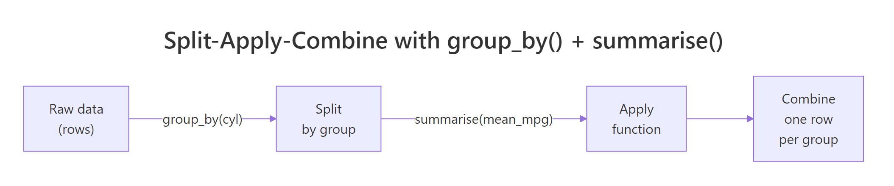
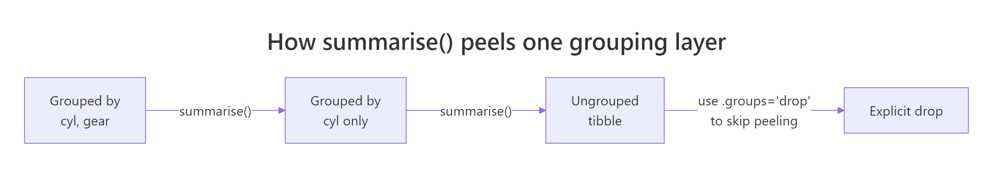

dplyr group_by() + summarise(): The Combination That Answers Most Business Questions
In dplyr, group_by() splits your data into groups and summarise() collapses each group into a single row of aggregated values. Together they answer almost every "what's the average X by Y?" question, the single most common pattern in day-to-day data analysis.
What does group_by() + summarise() actually do?
Most analytical questions sound the same: what's the average by category? which segment spends the most? how many orders per month? Every one of them follows one pattern, split rows into groups, apply a function, combine the results into a tidy table. group_by() marks the split and summarise() does the apply-and-combine in one step. Here's the payoff on the built-in mtcars dataset, answering "what's the average fuel economy by cylinder count?":
The 32-row mtcars table collapsed into 3 rows, one per unique value of cyl. For each group, mean(mpg) was computed over just the rows in that group, and n() counted them. Four-cylinder cars average 26.7 mpg while eight-cylinder cars manage only 15.1, exactly the kind of answer a business analyst needs in one line of code. That's the whole pattern: one verb to split, one verb to apply-and-combine.

Figure 1: The split-apply-combine pattern that group_by() + summarise() implements.
Try it: Use group_by() and summarise() on the built-in iris dataset to find the mean Sepal.Length for each species. Save the result to ex_iris_stats.
Click to reveal solution
Explanation: Inside summarise(), any function that returns one value per group works. mean(Sepal.Length) runs once per species, producing three rows.
How do you summarise multiple columns at once?
A real business question is rarely "just the average." You usually want the mean, the spread, the count, and the extremes, all in the same table so you can compare segments at a glance. summarise() happily takes as many name = function(col) expressions as you hand it, separated by commas, and each becomes a new column in the result.
Five summary columns in one pass. Notice how n() is a special helper, it doesn't take a column name because it simply counts rows in the current group. The standard deviation column reveals something the mean alone hides: six-cylinder cars cluster tightly (sd = 1.45), while four-cylinder cars are all over the map (sd = 4.51). That's a story a mean-only table would completely bury.
avg_mpg to mean_mpg_value and n_orders to count_of_orders. Short, business-friendly names keep downstream filter() and arrange() calls readable.Try it: Extend the mtcars summary above to also include median_mpg and mpg_range (max minus min). Save to ex_mtcars_stats.
Click to reveal solution
Explanation: Any R expression returning length 1 per group works, including arithmetic on other summaries like max(mpg) - min(mpg).
How do you group by more than one variable?
Business questions often nest: average mpg by cylinder count and transmission type, monthly revenue by region and product. Pass multiple columns to group_by() and dplyr creates one group for every unique combination. The result table then has one row per combination.
Three cylinder counts times up-to-three gear counts gives eight populated combinations (not nine, no eight-cylinder car in mtcars has four gears). The .groups = "drop" line at the end removes all grouping from the result, which you almost always want. The next section explains why.
Try it: In the built-in starwars dataset, count how many characters exist for each combination of species and sex. Save the result to ex_sw_counts with column name n_chars.
Click to reveal solution
Explanation: n() needs no arguments, it always counts rows in the current group, which after a two-variable group_by() means rows sharing both values.
Which summary functions work inside summarise()?
summarise() accepts any R function, as long as that function returns a single value when given a vector. That rule is simple but important: mean(x) returns one number, so it works. range(x) returns two numbers, so it doesn't (you'd need min(x) and max(x) separately). Here are the functions you'll use 90% of the time:
| Function | What it returns | Example use |
|---|---|---|
mean(x) |
Arithmetic mean | Average order value |
median(x) |
Median | Typical salary, robust to outliers |
sd(x), var(x) |
Spread | Volatility, consistency |
min(x), max(x) |
Extremes | Fastest/slowest, cheapest/priciest |
n() |
Row count in current group | Number of orders per customer |
n_distinct(x) |
Unique value count | Distinct products bought per customer |
sum(x) |
Total | Total revenue per region |
first(x), last(x) |
First/last value | Opening price, closing price |
quantile(x, 0.9) |
90th percentile | SLA thresholds |
Here's n_distinct() in action, a question prose can barely ask concisely: how many unique hair colors does each species in Star Wars have?
Humans come out on top with six distinct hair colors across 31 characters; most other species have just one. The filter() before group_by() drops rows where hair_color is missing so they don't inflate our distinct counts with NA. Chaining arrange(desc()) at the end produces an immediately readable leaderboard.
Try it: Count the distinct eye_color values per species in starwars. Keep only species with 2 or more characters. Save to ex_hair_counts.
Click to reveal solution
Explanation: n_distinct() counts unique non-NA values by default, which is almost always what you want for a distinct count.
What does the .groups argument do after summarise()?
Run a multi-variable group_by() followed by summarise() without .groups and dplyr prints this message:
`summarise()` has grouped output by 'cyl'. You can override using the `.groups` argument.That message confuses almost every new user. Here's what it means: when you group by cyl, gear and then summarise, dplyr assumes you might want to run another summary step on the remaining grouping (cyl), so it keeps the result grouped by all-but-the-last variable. Each call to summarise() peels off the innermost grouping layer.

Figure 2: Each summarise() call peels off one grouping layer. Use .groups = "drop" to stop peeling and return an ungrouped tibble.
The four options for .groups:
| Value | Behavior |
|---|---|
"drop_last" |
Peel the last grouping variable (the default, shows the warning) |
"drop" |
Drop all grouping, return a plain ungrouped tibble |
"keep" |
Keep the full original grouping |
"rowwise" |
Treat each resulting row as its own group |
group_vars() returns an empty character vector, confirming the result is fully ungrouped. That's the state you want 95% of the time, any further mutate() or filter() calls will act on the whole table instead of being silently group-aware.
mutate(rank = row_number()) after an unintentionally grouped summarise will restart ranks at 1 inside each leftover group rather than numbering the whole table. Always finish with .groups = "drop" or ungroup() unless you specifically want grouped behavior downstream.Try it: Group mtcars by am and cyl, summarise mean hp, and explicitly drop all grouping from the result. Save to ex_drop_stats.
Click to reveal solution
Explanation: Adding .groups = "drop" inside summarise() is cleaner than a separate ungroup() call at the end of the pipeline.
When should you use the new .by argument instead?
dplyr 1.1.0 (released January 2023) introduced a simpler alternative for one-shot aggregations: the .by argument, available directly on summarise(), mutate(), and filter(). It groups inline for that single call and always returns an ungrouped result, sidestepping the .groups confusion entirely.
Same numbers, two fewer lines. For multiple grouping columns, wrap them in c(): .by = c(cyl, gear). The .by form shines when grouping is a one-off and no downstream operations need the grouping to persist. When grouping should carry through several pipeline steps, keep using group_by().
packageVersion("dplyr"). On an older release, stick with group_by() + .groups = "drop", it works identically.Try it: Rewrite this group_by() call using .by instead. Save to ex_by_rewrite.
Click to reveal solution
Explanation: .by = gear replaces the whole group_by() |> ... |> ungroup() dance for a single summarise call.
How do you filter groups after summarising?
A common workflow: compute a per-group summary, then keep only the groups meeting some criterion, "regions with revenue above target," "products with more than 100 orders," "customers who bought at least three distinct items." Because summarise() returns a fresh tibble with one row per group, you can pipe it straight into filter() and arrange().
Two rows survive the avg_mpg > 18 filter, and arrange(desc(avg_mpg)) ranks them. This post-summarise filtering is how dplyr expresses SQL's HAVING clause, filter() before group_by() is WHERE, filter() after summarise() is HAVING. The mental model is the same in both worlds: filter rows, aggregate, then filter groups.
Try it: Find the top 2 gear groups in mtcars by mean hp. Use .by, then arrange and take the top 2. Save to ex_top_gear.
Click to reveal solution
Explanation: After summarise the result is a regular tibble, arrange() + head(2) gives the top-n rows by any column.
Practice Exercises
These capstones combine several patterns from above. Use my_* prefixed variable names so exercise code doesn't clobber variables used earlier in the tutorial.
Exercise 1: Homeworld leaderboard
In the starwars dataset, compute the mean height and character count for each homeworld. Drop rows with missing homeworld or height. Keep only homeworlds with 2 or more characters. Save the result sorted by avg_height descending to my_homeworld.
Click to reveal solution
Explanation: Two filter() calls play different roles, the first drops bad rows before grouping, the second drops small groups after summarising (SQL's WHERE vs HAVING).
Exercise 2: Cylinder efficiency ranking
For each cyl value in mtcars, compute mean mpg, then add a rank column (1 = best mpg). Save to my_mpg_rank. The final result should have columns cyl, avg_mpg, and rank, sorted by rank.
Click to reveal solution
Explanation: Using .by keeps the result ungrouped, so row_number() numbers the whole table instead of restarting inside groups.
Exercise 3: Diamond cut efficiency
In the ggplot2::diamonds dataset, for each cut level compute the median price and the median price / carat (a crude "price efficiency" metric). Sort the result so the cut with the highest median price-per-carat is at the top. Save to my_cut_eff.
Click to reveal solution
Explanation: Derived quantities (price / carat) can be computed directly inside summarise(), no need to mutate() first. Premium beats Ideal here because Premium diamonds tend to be larger on average.
Complete Example
Here's a full end-to-end workflow on starwars that stitches every verb from this tutorial together: filter bad rows, group, compute several summaries, filter groups, sort. This is what 80% of real-world dplyr code looks like.
Every line corresponds to one question: drop missing mass or height, for each species, count and summarise, keep species with at least 2 characters, sort by average mass. That readability is the whole reason dplyr exists.
Summary
| Concept | What to remember |
|---|---|
group_by(var) |
Marks invisible dividers between rows, no physical sorting or movement |
summarise(name = f(x)) |
Collapses each group into one row; any length-1 function works |
n() |
Counts rows in the current group, no arguments needed |
n_distinct(x) |
Counts unique non-NA values per group |
| Multiple groupings | group_by(a, b) creates one group per unique combination |
.groups = "drop" |
Return an ungrouped tibble, almost always what you want |
.by (dplyr 1.1+) |
Inline grouping for one call; always returns ungrouped |
| Filter → Summarise → Filter | SQL's WHERE → GROUP BY → HAVING translated to dplyr |
References
- dplyr reference,
group_by(). Link - dplyr reference,
summarise(). Link - dplyr 1.1.0 release notes, introducing
.by. Link - Wickham, H., & Grolemund, G., R for Data Science, Chapter 4: Data Transformation. Link
- dplyr grouping vignette. Link
- Wickham, H., "The Split-Apply-Combine Strategy for Data Analysis." Journal of Statistical Software 40(1), 2011. Link
- Posit tidyverse blog, dplyr 1.0.0 summarise changes. Link
Continue Learning
- dplyr filter() and select(), Row and column subsetting, the verbs you reach for before group_by.
- dplyr mutate() and rename(), Add computed columns; pairs naturally with summarise for feature engineering.
- R Pipe Operator, The
|>and%>%operators that glue these pipelines together.